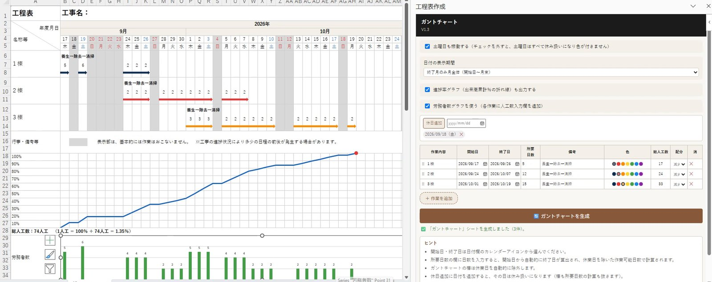

作業内容と日付を入れて「生成」を押すだけで、施工計画書の工程表（ガントチャート）をExcelに自動作成。休業日の除外、進捗率グラフ、労務者数グラフまで一度に仕上がります。

手作業で色を塗ったり日数を数えたりする必要はありません。
作業内容・開始日・所要日数を入れて「ガントチャートを生成」を押すだけ。専用シートに工程表を作ります。
日曜・祝日、土曜（設定可）、特別休業日を除いて終了日を計算。休みの日は灰色で表示します。
出来高累計（％）の折れ線グラフを工程表の下に自動で追加します。
総人工数を「均等・増加・減少」で日ごとに自動配分。Excel上で直接修正もできます。
月全体を表示するかを4種類から選択。工期が短くても印刷がきれいに仕上がります。
作業ウィンドウとExcelの内容が違うときは、どちらに合わせるかを確認してから反映します。
入力内容は使っているExcelファイルの中に保存。同じファイルを開けば続きから作業できます。
一度インストールすれば、毎日自動で最新版に。改良点がすぐに反映されます。
操作はすべてExcelの作業ウィンドウの中で完結します。
作業内容・開始日・所要日数を入れます。終了日は休業日を除いて自動で計算。
「ガントチャートを生成」を押すと、工程表とグラフができあがります。
1ページに収まるので、そのまま施工計画書に使えます。
アドインの起動から、作業の入力、ガントチャートの生成、グラフ、印刷プレビューまでを実際の画面で紹介します。
タブを切り替えて、実際の画面をご覧ください。
ダウンロードしてダブルクリックするだけ。約1分で終わります。
［ホーム］→［アドイン］を開き、「開発者アドイン」の「工程表作成」を選んでください。Excelを起動するたびにこの操作が必要な場合があります。
毎日9時とWindowsへのログオン時に自動で最新版になります。反映まで最大10分ほどかかることがあるので、変わらないときはExcelを開き直してください。
使っているExcelブックの中に保存されます。ブックを上書き保存すれば、次に開いたときも続きから作業できます。新しいブックでは空の状態から始まります。
メールでは .bat ファイルが止められることがあります。このページのURLを共有するか、ZIPのまま送ってください。
インターネットから入手したファイルに表示されるWindowsの確認画面です。［詳細情報］を押すと［実行］ボタンが表示されます。